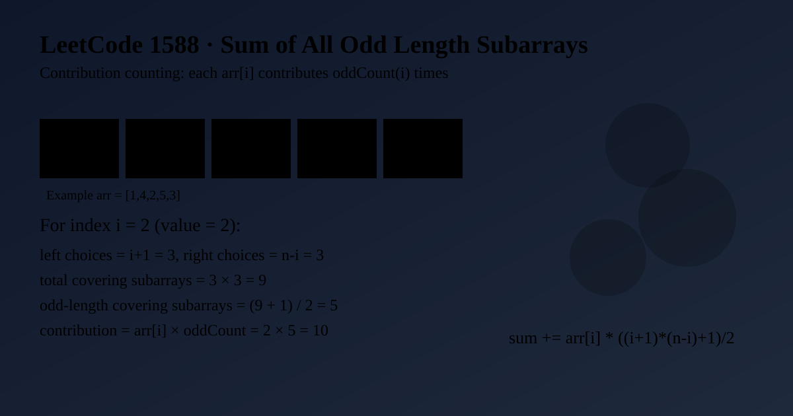

LeetCode 1588: Sum of All Odd Length Subarrays (Contribution Counting by Coverage)
LeetCode 1588ArrayCombinatoricsToday we solve LeetCode 1588 - Sum of All Odd Length Subarrays.
Source: https://leetcode.com/problems/sum-of-all-odd-length-subarrays/

English
Problem Summary
Given an integer array arr, return the sum of all odd-length subarrays. A subarray is contiguous.
Key Insight
Instead of enumerating every odd-length subarray, count each element's contribution. For index i, there are (i + 1) choices for the left boundary and (n - i) choices for the right boundary, so total subarrays including arr[i] is (i + 1) * (n - i). Exactly half (rounded up) are odd length, so odd count is (total + 1) / 2.
Algorithm
- Let n = arr.length and answer = 0.
- For each index i:
• total = (i + 1) * (n - i)
• odd = (total + 1) / 2
• add arr[i] * odd to answer.
- Return answer.
Complexity Analysis
Time: O(n).
Space: O(1).
Common Pitfalls
- Trying triple loops to enumerate every odd-length subarray (too slow conceptually).
- Forgetting contiguous requirement of subarray.
- Not using integer arithmetic carefully for odd count formula.
Reference Implementations (Java / Go / C++ / Python / JavaScript)
class Solution {
public int sumOddLengthSubarrays(int[] arr) {
int n = arr.length;
int answer = 0;
for (int i = 0; i < n; i++) {
int total = (i + 1) * (n - i);
int odd = (total + 1) / 2;
answer += arr[i] * odd;
}
return answer;
}
}func sumOddLengthSubarrays(arr []int) int {
n := len(arr)
answer := 0
for i, v := range arr {
total := (i + 1) * (n - i)
odd := (total + 1) / 2
answer += v * odd
}
return answer
}class Solution {
public:
int sumOddLengthSubarrays(vector<int>& arr) {
int n = (int)arr.size();
int answer = 0;
for (int i = 0; i < n; ++i) {
int total = (i + 1) * (n - i);
int odd = (total + 1) / 2;
answer += arr[i] * odd;
}
return answer;
}
};class Solution:
def sumOddLengthSubarrays(self, arr: List[int]) -> int:
n = len(arr)
answer = 0
for i, v in enumerate(arr):
total = (i + 1) * (n - i)
odd = (total + 1) // 2
answer += v * odd
return answervar sumOddLengthSubarrays = function(arr) {
const n = arr.length;
let answer = 0;
for (let i = 0; i < n; i++) {
const total = (i + 1) * (n - i);
const odd = Math.floor((total + 1) / 2);
answer += arr[i] * odd;
}
return answer;
};中文
题目概述
给定整数数组 arr，返回所有奇数长度子数组元素和。子数组要求连续。
核心思路
不必枚举所有子数组。改为计算每个元素的贡献次数：对于下标 i，左边界有 i+1 种选法，右边界有 n-i 种选法，所以包含 arr[i] 的子数组总数是 (i+1)*(n-i)。其中奇数长度个数是“总数的一半向上取整”，即 (total+1)/2。
算法步骤
- 设 n = arr.length，答案 answer = 0。
- 遍历每个下标 i：
• total = (i + 1) * (n - i)
• odd = (total + 1) / 2
• 累加 arr[i] * odd 到 answer。
- 返回 answer。
复杂度分析
时间复杂度：O(n)。
空间复杂度：O(1)。
常见陷阱
- 用三重循环硬算所有奇数长度子数组，思路冗长。
- 忽略“子数组必须连续”。
- 奇数次数公式使用整除时写错。
多语言参考实现（Java / Go / C++ / Python / JavaScript）
class Solution {
public int sumOddLengthSubarrays(int[] arr) {
int n = arr.length;
int answer = 0;
for (int i = 0; i < n; i++) {
int total = (i + 1) * (n - i);
int odd = (total + 1) / 2;
answer += arr[i] * odd;
}
return answer;
}
}func sumOddLengthSubarrays(arr []int) int {
n := len(arr)
answer := 0
for i, v := range arr {
total := (i + 1) * (n - i)
odd := (total + 1) / 2
answer += v * odd
}
return answer
}class Solution {
public:
int sumOddLengthSubarrays(vector<int>& arr) {
int n = (int)arr.size();
int answer = 0;
for (int i = 0; i < n; ++i) {
int total = (i + 1) * (n - i);
int odd = (total + 1) / 2;
answer += arr[i] * odd;
}
return answer;
}
};class Solution:
def sumOddLengthSubarrays(self, arr: List[int]) -> int:
n = len(arr)
answer = 0
for i, v in enumerate(arr):
total = (i + 1) * (n - i)
odd = (total + 1) // 2
answer += v * odd
return answervar sumOddLengthSubarrays = function(arr) {
const n = arr.length;
let answer = 0;
for (let i = 0; i < n; i++) {
const total = (i + 1) * (n - i);
const odd = Math.floor((total + 1) / 2);
answer += arr[i] * odd;
}
return answer;
};
Comments